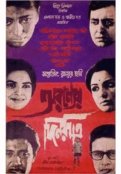

Efter gymnasiset började jag läsa några fristående kurser i favoritämnet tyska på SU. Jag blev aldrig klar med C-uppsatsen och fortsatte istället vidare med franska. Efter ytterligare lite språkkurser i finska
och kinesiska bestämde jag mig att det var dags att bli anställningarbar och sökte mig till ekonomi och IT-programmet utan att
riktigt veta vad jag skulle förvänta mig.
Arbetserfarenhet
Under sex år arbetade jag extra som vikarierande brevbärare på Posten. Det var på sätt och vis ett helt okej jobb som gav mig motion och möjlighet att lyssna på podcast under arbetstiden.
Men rädslan för att bli kvar där resten av livet gjorde att jag till slut sa upp mig. För att citera en före detta kollega som varit där i 20+ år:
"Jag skulle bara jobba här en sommar."
Ströjobb:
Provledare under högskoleprovet
Inventering, scanning och taggning på H&M Drottninggatan
Assistant stage manager under Filosofisk natt på Moderna museet
Intressen
Ända sedan en vän lånade ut en VHS med en indisk film dubbad till tyska (!) år 2004 har jag varit intresserad indisk film och tittade i
perioder på väldigt många sådana, ofta hyrda från någon inte helt legitim butik som också sålde mat och kryddor. Jag slukade allt jag kom över:
maintstream-filmer, filmer från 50-, 60- och 70-talet, och senare också filmer från andra delar av landet samt smalare filmer utan musik och dans-inslag.

Sammanflätad animation med fyra filmomslag.
Fyra bra indiska filmer:
Nuvvostanante Nenoddantana (2005, telugu)
Kahaani (2012, hindi)
Mr and Mrs Iyer (2002, engelska)
Aranyer din ratri (1970, bengali)
På tal om indisk film och musik så kan jag också passa på att dela med mig av ett ljud- och videoklipp från Stockholm Sangeet Festival som äge rum under hösten 2017: